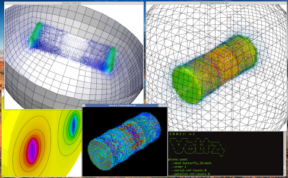
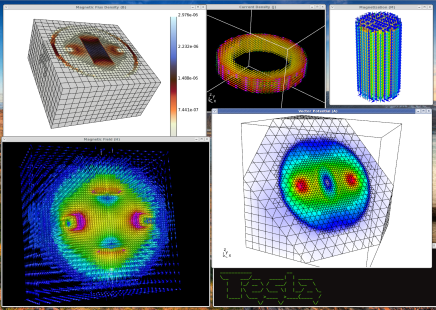

Electromagnetics Mini Applications
The miniapps/electromagnetics directory contains a collection of
electromagnetic miniapps based on MFEM.
Compared to the example codes, the miniapps are more complex, demonstrating more advanced usage of the library. They are intended to be more representative of MFEM-based application codes. We recommend that new users start with the example codes before moving to the miniapps.
The current electromagnetic miniapps are described below.
Electromagnetics
The equations describing electromagnetic phenomena are known collectively as the Maxwell Equations. They are usually given as:
Where equation can be referred to as Ampére's Law, equation is called Faraday's Law, equation is Gauss's Law, and equation doesn't generally have a name but is related to the nonexistence of magnetic monopoles. The various fields in these equations are:
| Symbol | Name | SI Units |
|---|---|---|
| magnetic field | Ampere/meter | |
| magnetic flux density | Tesla | |
| electric field | Volts/meter | |
| electric displacement | Coulomb/meter | |
| current density | Ampere/meter | |
| charge density | Coulomb/meter |
In the literature these names do vary, particularly those for and , but in this document we will try to adhere to the convention laid out above.
Generally we also need constitutive relations between and and/or between and . These relations start with the definitions:
Where is the polarization density, and is the magnetization. Also, is the permittivity of free space and is the permeability of free space which are both constants of nature. In many common materials the polarization density can be approximated as a scalar multiple of the electric field, i.e., , where is called the electric susceptibility. In such cases we usually use the relation with and call the permittivity of the material.
The nature of magnetization is more complicated but we will take a very simplified view which is valid in many situations. Specifically, we will assume that either is proportional to yielding the relation where and is the magnetic susceptibility or that is independent of the applied field. The former case pertains to both diamagnetic and paramagnetic materials and the latter to ferromagnetic materials.
Finally we should note that equations and can be combined to yield the equation of charge continuity which can be important in plasma physics and magnetohydrodynamics (MHD).
Electrostatics
Electrostatic problems come in a variety of subtypes but they all derive from Gauss's Law and Faraday's Law (equations and ). When we assume no time variation, Faraday's Law becomes simply . This suggests that the electric field can be expressed as the gradient of a scalar field which is traditionally taken to be , i.e.
where is called the electric potential and has units of Volts in the SI system. Inserting this definition into equation gives:
which is Poisson's equation for the electric potential, where we have assumed a linear constitutive relation between and of the form . This allows a polarization which is proportional to as well a polarization independent of . If this relation happens to be nonlinear then Poisson's equation would need to be replaced with a more complicated nonlinear expression.
The solutions to equation are non unique because they can be shifted by any additive constant. This means that we must apply a Dirichlet boundary condition at least at one point in the problem domain in order to obtain a solution. Typically this point will be on the boundary but it need not be so. Such a Dirichlet value is equivalent to fixing the voltage (a.k.a. potential) at one or more locations. Additionally, this equation admits a normal derivative boundary condition. This corresponds to setting to a prescribed value on some portion of the boundary. This is equivalent to defining a surface charge density on that portion of the boundary.
Volta Mini Application
The electrostatics mini application, named volta after the inventor of the
voltaic pile, is intended to
demonstrate how to solve standard electrostatics problems in MFEM. Its source
terms and boundary conditions are simple but they should indicate how more
specialized sources or boundary conditions could be implemented.

Note that this application assumes the mesh coordinates are given in meters.
Mini Application Features
Permittivity: The permittivity, , is assumed to be that of free
space except for an optional sphere of dielectric material which can be
defined by the user. The command line option -ds can be used to set the
parameters for this dielectric sphere. For example, to produce a sphere at the
origin with a radius of 0.5 and a relative permittivity of 3 the user would
specify: -ds '0 0 0 0.5 3'.
Charge Density: The charge density, , is assumed to be zero except for
an optional sphere of uniform charge density which can be defined by the user.
The command line option for this is -cs which follows the same pattern as
the dielectric sphere. Note that the last entry is the total charge of the
sphere and not its charge density.
Polarization: A polarization vector function, , can be imposed as a
source of the electric field. The command line option -vp creates a
polarization due to a simple voltaic pile, i.e., a cylinder which is
electrically polarized along its axis. The user should specify the two end
points of the cylinder axis, its radius and the magnitude of the polarization
vector.
Dirichlet BC: Dirichlet boundary conditions can either specify piecewise
constant voltages on a collection of surfaces or they can specify a gradient
field which approximates a uniform applied electric field. In either case the
user specifies the surfaces where the Dirichlet boundary condition should be
applied using the -dbcs option followed by a list of boundary attributes.
For example to select surfaces 2, 3, and 4 the user would use the following:
-dbcs '2 3 4'.
To apply a gradient field on these surfaces the user would also use the
-dbcg option. This defaults to the uniform field in 3D or
in 2D. An arbitrary vector can be specified with -uebc
followed by the desired vector, e.g., to apply the user would
supply: -uebc '1 2 3'.
To specify piecewise constant potential values the user would list the
desired values after -dbcv as follows: -dbcv '0.0 1.0 -1.0'.
Neumann BC: Neumann boundary conditions set the normal component of the
electric displacement on portions of the boundary. This normal component is
equivalent to the surface charge density on the surface. This is rarely used
because surface charge densities are rarely known unless they are know to be
zero. However, if the surface charge density is zero then the Neumann BCs are
not needed because this is the natural boundary condition. Only piecewise
constant Neumann boundary conditions are supported. They can be set
analogously to piecewise Dirichlet boundary conditions but using options
-nbcs and -nbcv.
Magnetostatics
Magnetostatic problems arise when we assume no time variation in Ampére's Law which leads to:
We will again assume a somewhat more general constitutive relation between and than is normally seen:
Where the magnetization is split into two portions; one which is proportional to and given by , and another which is independent of and is given by . This allows for paramagnetic and/or diamagnetic materials defined through as well as ferromagnetic materials represented by . This choice yields:
Which, when combined with equation , becomes:
If happens to be zero we have another option because we can assume that for some scalar potential . When combined with equation this leads to:
Currently only the vector potential equation is used so we will focus on that for the remainder of this document.
The vector potential is again non unique so we must apply additional constraints in order to arrive at a solution for . When working analytically it is common to constrain the solution by restricting the divergence of but numerically this leads to other complications. For our problems of interest it will be necessary to require Dirichlet boundary conditions on the entire outer surface in order to sufficiently constrain the solution.
Dirichlet boundary conditions for the vector potential on a surface provide a means to specify the component of normal to that surface. For example, setting the tangential components of to be zero on a particular surface results in a magnetic flux density which must be tangent to that surface.
Tesla Mini Application
The magnetostatics mini application, named tesla after the unit of magnetic
field strength (and of course the man Nikola Tesla), is intended to demonstrate
how to solve standard magnetostatics problems in MFEM. Its source terms and
boundary conditions are simple but they should indicate how more specialized
sources of boundary conditions could be implemented.

Note that this application assumes the mesh coordinates are given in meters.
Mini Application Features
Permeability: The permeability, , is assumed to be that of free space
except for an optional spherical shell of diamagnetic or paramagnetic material
which can be defined by the user. The command line option -ms can be used to
set the parameters for this shell.
For example, to produce a shell at the origin with inner and outer radii of
0.4 and 0.5 respectively and a relative permeability of 3 the user would
specify: -ms '0 0 0 0.4 0.5 3'.
Current Density: The current density, , is assumed to be zero except for
an optional ring of constant current which can be defined by the user. The
command line option for this is -cr which requires two points giving the end
points of the ring's axis, inner and outer radii, and a constant total
current.
For example, to specify a ring centered at the origin and laying in the XY
plane with a thickness of 0.2 and radii 0.4 and 0.5, and a current of 2 amps
the user would give: -cr 0 0 -0.1 0 0 0.1 0.4 0.5 2.
Magnetization: A permanent magnetization, , can be applied in the form
of a cylindrical magnet with poles at its circular ends. The command line
option is -bm which indicates a 'bar magnet'. The option requires the two
end points of the cylinder's axis, its radius, and the magnitude of the
magnetization.
Surface Current Density: A surface current can be imposed indirectly by
specifying separate surface patches with different voltages as well as a
collection of surface patches connecting the voltages through which the
current will flow. The voltage surfaces and their voltages can be specified
using -vbcs followed by the indices of the surfaces and -vbcv followed by
their voltages. The path for the surface current () is specified by
using -kbcs followed by a set of surface indices.
For example, applying voltages 1 and -1 to surfaces 2 and 3 with a current
path along surfaces 4 and 6 would be specified as:
-vbcs '2 3' -vbcv '1 -1' -kbcs '4 6'.
Any surfaces not listed as voltage or current surfaces will be assigned as homogeneous Dirichlet boundaries. Note that when this option is selected an auxiliary electrostatic problem will be solved on the surface of the geometry to compute the surface current.
Dirichlet BC: Dirichlet boundary conditions are required if a surface
current density is not defined. For this reason the user need not specify
boundary surfaces by number since the boundary condition must be applied on
all of them. The default boundary condition is a homogeneous Dirichlet
boundary condition on all outer surfaces. This means that the normal
component of will be zero at the outer boundary. An alternative is to
specify a desired uniform magnetic flux density on the entire outer surface.
This is accomplished with the -ubbc command line option followed by the
desired vector.
Transient Full-Wave Electromagnetics
Transient electromagnetics problems are governed by the time-dependent Maxwell equations and when combined using the constitutive relations and . When combined these equations can describe the evolution and propagation of electromagnetic waves.
The term arises in the presence of electrically conductive materials where the electric field induces a current which can be separated from . In such cases the total current appearing in Ampére's Law can be expressed as the sum of an applied current (also labeled as ) and an induced current .
Solving these equations requires initial conditions for both the electric and magnetic fields and as well as boundary conditions related to the tangential components of or . Other formulations are possible such as evolving and or the potentials and . This system of equations can also be written as a single second order equation involving only , , , or . Each of these formulations has a different set of sources, initial and boundary conditions for which it is well-suited. The choice we make here is perhaps the most common but it may not be the most convenient choice for a given application.
These equations can be used to evolve their initial conditions or they can be driven by either a current source or through time-varying boundary conditions. It is also possible to combine all three of these sources in a single simulation.
Maxwell Mini Application
The electrodynamics mini application, named maxwell after James Clerk Maxwell
who first formulated the classical theory of electromagnetic radiation, is
intended to demonstrate how to solve transient wave problems in MFEM. Its source
terms and boundary conditions are simple but they should indicate how more
specialized sources or boundary conditions could be implemented.
An example simulation is depicted below (click to animate the wave propagation).

Time integration is handled by a variable order symplectic time integration algorithm. This algorithm is designed for systems of equations which are derived from a Hamiltonian and it helps to ensure energy conservation within some tolerance. The time step used during integration is automatically chosen based on the largest stable time step as computed from the largest eigenvalue of the update equations. This determination involves a user-adjustable factor which creates a safety margin. By default the actual time step is less than 95% of the estimate for the largest stable time step.
Note that this application assumes the mesh coordinates are given in meters. Internally the code assumes time is in seconds but the command line options use nanoseconds for convenience.
Mini Application Features
Time Evolution: The initial and final times for the simulation can be
specified, in nanoseconds, with the -ti and -tf options. Visualization
snapshots of data will be written out after time intervals specified by -ts
which again given in nanoseconds. The order of the time integration can be
specified, from 1 to 4, using the -to option.
Permittivity: The permittivity, , is assumed to be that of free
space except for an optional sphere of dielectric material which can be
defined by the user. The command line option -ds can be used to set the
parameters for this dielectric sphere. For example, to produce a sphere at the
origin with a radius of 0.5 and a relative permittivity of 3 the user would
specify: -ds '0 0 0 0.5 3'.
Permeability: The permeability, , is assumed to be that of free space
except for an optional spherical shell of diamagnetic or paramagnetic material
which can be defined by the user. The command line option -ms can be used to
set the parameters for this shell.
For example, to produce a shell at the origin with inner and outer radii of
0.4 and 0.5 respectively and a relative permeability of 3 the user would
specify: -ms '0 0 0 0.4 0.5 3'.
Conductivity: The conductivity, , is assumed to be zero except for
an optional sphere of conductive material which can be defined by the user.
The command line option -cs can be used to set the parameters for this
conductive sphere. For example, to produce a sphere at the origin with a
radius of 0.5 and a conductivity of 3,000,000 S/m the user would specify: -cs
'0 0 0 0.5 3e6'.
Current Density: The current density, , is assumed to be zero except for
an optional cylinder of pulsed current which can be defined by the user. The
command line option for this is -dp, short for 'dipole pulse', which
requires two points giving the end points of the cylinder's axis, radius,
amplitude (), pulse center (), and a pulse width ().
The time dependence of this pulse is given by:
Dirichlet BC: Homogeneous Dirichlet boundary conditions, which constrain the
tangential components of to be zero, can be
activated on a portion of the boundary by specifying a list of boundary
attributes such as -dbcs '4 8'. For convenience a boundary attribute of
'-1' can be used to specify all boundary surfaces. Non-Homogeneous,
time-dependent Dirichlet boundary conditions are supported by the Maxwell
solver so a user can edit maxwell.cpp and supply their own function if
desired.
Absorbing BC: A first order Sommerfeld absorbing boundary condition can be
applied to a portion of the boundary using the -abcs option along with a
list of boundary attributes such as -abcs '4 18'. Again, the special
purpose boundary attribute '-1' can be used to specify all boundary surfaces.
This boundary condition depends on a coefficient,
, which must be matched to the materials just
inside the boundary. The code assumes that the permittivity and permeability
are those of the vacuum near the surface but, if this is not the case, an
ambitious user can replace etaInvCoef_ with a more appropriate function.
Transient Magnetics and Joule Heating
Joule Mini Application
The transient magnetics mini application, named joule after the SI unit of energy (and the
scientist James Prescott Joule, who was also a brewer), is intended to demonstrate how to solve
transient implicit diffusion problems. The equations of low-frequency electromagnetics are coupled
with the equations of heat transfer. The coupling is one way, electromagnetics generates Joule
heating, but the heating does not affect the electromagnetics. The thermal problem
is solved using an method, i.e. temperature is discontinuous and the
thermal flux is in .
There are three linear solves per time step:
- Poisson's equation for the scalar electric potential is solved using the AMG preconditioner,
- the electric diffusion equation is solved using the AMS preconditioner, and
- the thermal diffusion equation is solved using the ADS preconditioner.
Two example meshes are provided, one is a straight circular metal rod in vacuum, the other is a helical coil in vacuum (the latter is 21MB and can be downloaded from here). The idea is that a voltage is applied to the ends of the rod/coil, the electric field diffuses into the metal, the metal is heated by Joule heating, the heat diffuses out.
The equations are:
The equations are integrated in time using implicit time integration, either midpoint or higher order SDIRK.
Since there are three solves, three sets of boundary conditions must be specified. The
essential BC's are the scalar potential, the electric field, and the thermal flux. These are not
set via command line arguments, you have to edit the code to change these. To change these,
search the code for ess_bdr
There are conducting and non-conducting material regions, and the mesh must have integer attributes
to specify these regions. To change these, search the code for std::map<int, double> this maps the
integer attribute to the floating-point material value.
Note that this application assumes the mesh coordinates are given in meters.

The above picture shows Joule heating of a cylinder using the mesh cylinder-hex.mesh. The cylinder is
surrounded by vacuum. The black arrows show the magnetic field , the magenta arrows show the heat
flux , and the pseudocolor in the center of the cylinder shows the temperature.
Mini Application Features
Boundary Conditions: Since there are three solves, three sets of boundary conditions must be specified. The
essential BC's are the voltage for the scalar potential, the tangential electric field, and the normal thermal flux.
These are not
set via command line arguments, you have to edit the code to change these. To change these,
search the code for ess_bdr. Note that the essential BC's can be time varying.
Material Properties: There are conducting and non-conducting material regions, and the mesh must have integer attributes
to specify these regions. To change these, search the code for std::map<int, double> this maps the
integer attribute to the floating-point material value.